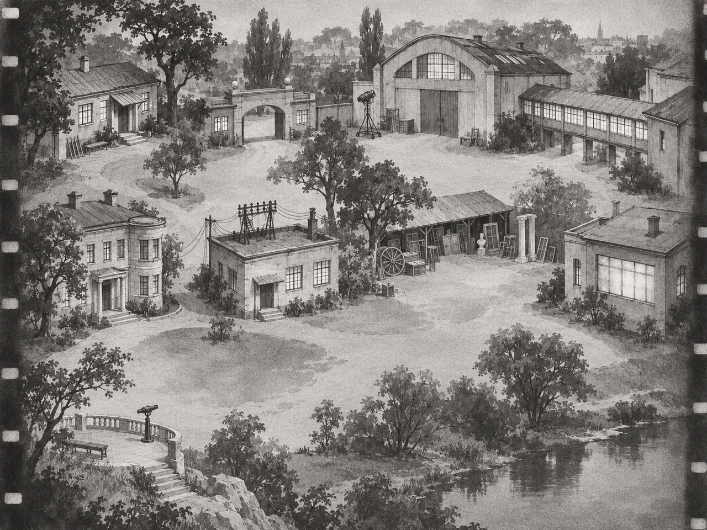
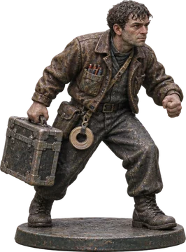

Седьмой негатив
Карты и фигурки ведущего
Игровой комплект
3 игрока · 4 игрока · 5 игроков · 6 игроков · 7 игроков · 8 игроков
Карта кампании

Поля боя


Герои


Персонажи ведущего


Противники


Наёмный сопровождающий реквизита 4Наёмный сопровождающий реквизита 5Наёмный сопровождающий реквизита 2Наёмный сопровождающий реквизита 6Наёмный сопровождающий реквизита 3Наёмный сопровождающий реквизита 1 Дежурный студийной охраны 3Дежурный студийной охраны 5Дежурный студийной охраны 6Дежурный студийной охраны 1Дежурный студийной охраны 2Дежурный студийной охраны 4
Дежурный студийной охраны 3Дежурный студийной охраны 5Дежурный студийной охраны 6Дежурный студийной охраны 1Дежурный студийной охраны 2Дежурный студийной охраны 4 Сопровождающий закрытого показа 1Сопровождающий закрытого показа 6Сопровождающий закрытого показа 4Сопровождающий закрытого показа 5Сопровождающий закрытого показа 2Сопровождающий закрытого показа 3
Сопровождающий закрытого показа 1Сопровождающий закрытого показа 6Сопровождающий закрытого показа 4Сопровождающий закрытого показа 5Сопровождающий закрытого показа 2Сопровождающий закрытого показа 3